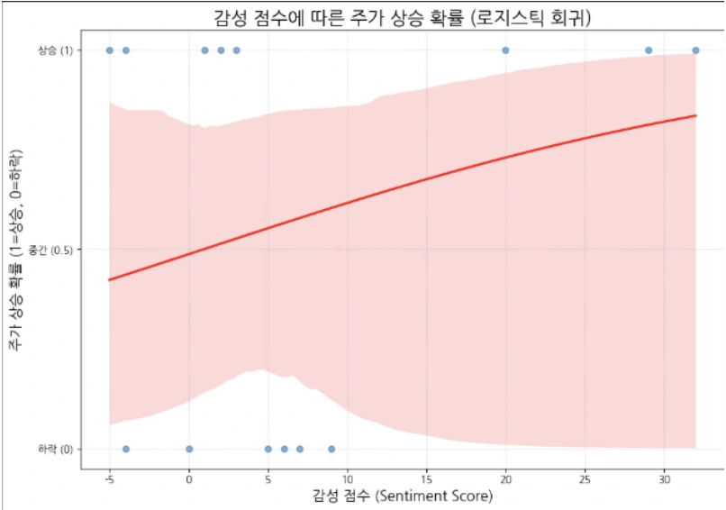

PROJECT 15 / 텍스트 마이닝 · 감성분석
증권사 댓글 감성분석을 통한 주가 변동성 예측
증권 댓글 감성과 주가 방향의 관계를 분석합니다. 표본에서는 통계적 유의성이 확인되지 않았습니다.
Fall 2026 · ENG3510
Data Analysis for AI
언어와 인문학의 질문을 데이터로 탐구합니다. Python을 활용한 텍스트 전처리와 탐색적 분석부터 생성형 AI와 프롬프트 설계까지, 직접 실습하며 데이터를 해석하고 문제를 해결하는 방법을 배웁니다.
Python · 텍스트 데이터 · 탐색적 분석 · 생성형 AI
PROJECT ARCHIVE
다양한 전공의 학생들이 생성형 AI로 탐구하고 구현한 프로젝트입니다.

PROJECT 15 / 텍스트 마이닝 · 감성분석
증권 댓글 감성과 주가 방향의 관계를 분석합니다. 표본에서는 통계적 유의성이 확인되지 않았습니다.

PROJECT 12 / 컴퓨터 비전 · 물리 모델링
연속 이미지에서 공의 위치를 추출하고, 머신러닝과 고전역학을 결합해 미래 궤적을 예측합니다.